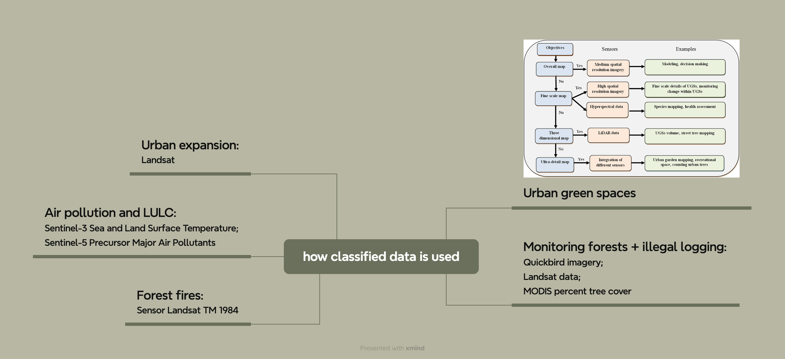
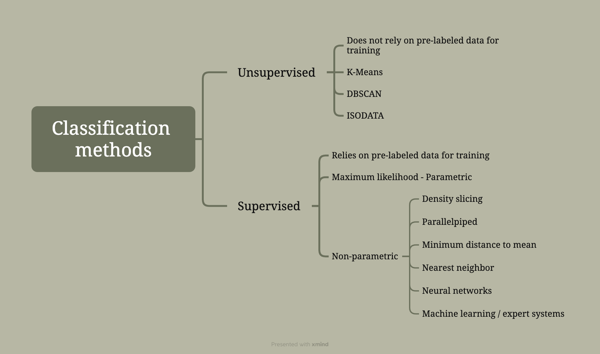
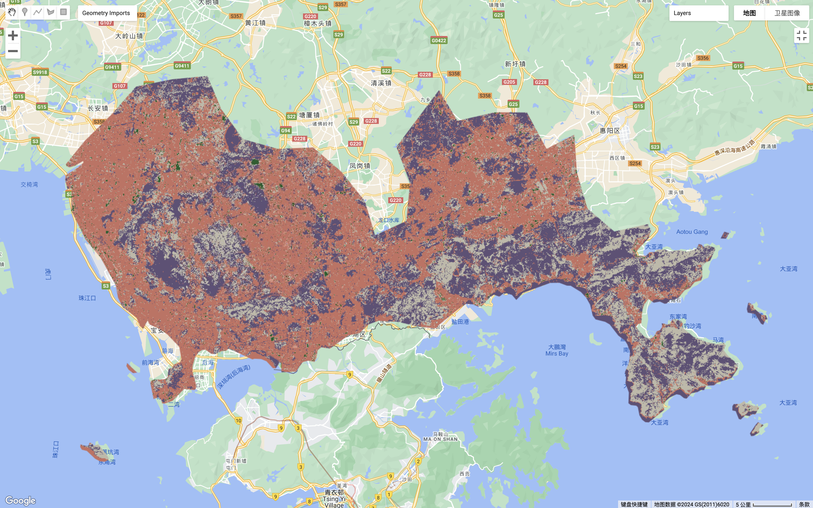
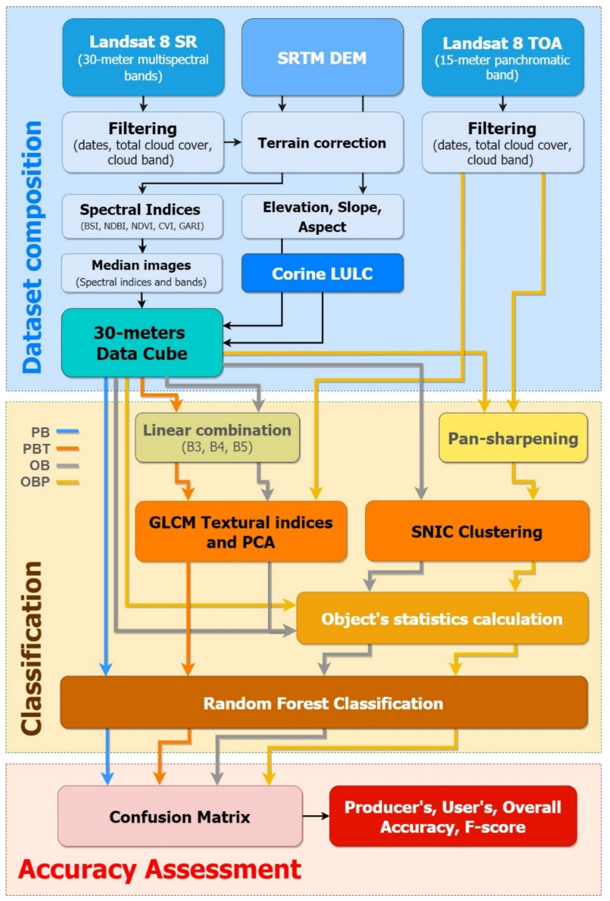

7 Week 7 - Classification I
7.1 7.1 Summary
7.1.1 7.1.1 Review of how classified data is used:
The following mind map summarises the application areas of classified data that were covered in the lecture and summarises some data that is available for classified research or sensors that are the source of these classified data in their respective fields:

how classified data is used
7.1.2 7.1.2 How to classify remotely sensed data
Classification methods for remotely sensed data could be divided into unsupervised and supervised classification, more specifically see the mind map below:

The mind map of classification methods for remotely sensed data
For the summary of key concepts covered in the lecture:
Classification and regression trees (CART):
- Classification and regression trees (CART) are a machine learning technique used to divide data into two or more discrete categories or to predict continuous variables. CART builds decision trees by recursively splitting the dataset into purer or less variable subsets. The evaluation of CART classification outcomes can be conducted by calculating the Gini impurity of leaves, with lower Gini impurity indicating better classification performance and purer leaves. (Avoid overfitting!)
Random Forests:
- Random Forest classification is an ensemble learning method that enhances classification accuracy by building multiple decision trees and combining their predictions. The accuracy of Random Forest classification is commonly evaluated using the Out-of-Bag (OOB) error rate, with a lower OOB error indicating higher predictive accuracy.
Maximum Likelihood:
- Maximum likelihood is a classification approach based on probability that determines the classification of each pixel by calculating its probability of belonging to various land cover types. It employs a multivariate normal distribution function to process image data, choosing the category with the highest probability as the pixel’s classification. This method allows for the consideration of prior probability information, although such information is often unavailable.
Support Vector Machines (SVM):
- It is a binary linear classifier that categorises data by maximizing the margin between two classes of training data. When data are not linearly separable, SVM employs the kernel trick to find the optimal separating hyperplane by transforming the data into a higher dimensional space. The choice of parameters, such as C and Gamma, significantly impacts the model’s performance and is typically determined through grid search for optimal values.
7.1.3 7.1.3 Practical
This week’s practical focused on classifying surface features using remote sensing data, including how to load and process Global Administrative Unit Layers (GAUL) data, and how to apply supervised learning methods for information extraction. Specifically, it explored using CART and Random Forest classifiers to classify Sentinel-2 satellite data of the Shenzhen area, and further discussed the classification accuracy assessment and the error matrix.
In the following section, I will mainly focus on summarising what I have been doing within Practical in terms of focusing on CART and Random Forest Classification:
Image data after clipping using GEE (to enable comparison of classification results later on, so added to the learning diary):

Shenzhen Remotely Sensed Image
In the initial labelling of the training samples, I labelled too many pixel points beyond what GEE was running at so it produced errors. Therefore the number of labelled points must not exceed the maximum of 5000 pixel points required by Google. Later on, some of my labelled pixels were too few resulting in inaccurate classification results. Therefore, it is important to have the appropriate amount of labelled sample pixels.
This is an image of the CART classification result where I just began to have a significant error due to including too few pixels in the labelled samples:

The image of the CART classification results (with relatively large errors)
Finally, the result obtained from the CART classification after I added some more labelled pixels is much better when comparing the result with the clipping Shenzhen satellite image mentioned in the previous section and the result of the first CART classification:

The image of the CART classification results (much better one)
The following image is the result of random forest classification. When we compare it with the cropped Shenzhen satellite image and all the results obtained from the previous CART classification, we could find that the results obtained from the Random Forest classification look the best to naked eyes (e.g., the classification for water is better and so on):

The image of the Random Forest classification results
Accuracy assessment for the randomised forest classification result:
Random Forest Out of Bag (OOB) Error Estimate:
The Out of Bag (OOB) Error Estimate serves as a prediction error metric for random forest. This estimate is calculated using the data not employed in the training of each decision tree within the ensemble, known as the OOB sample. Through predicting outcomes with this data, the overall error rate is derived. In this specific case, the OOB error estimate is reported to be 0.007407407407407408, implying an extremely accurate prediction capability of the random forest classifier, closely aligning with a high accuracy level.
Resubstitution Accuracy:
Resubstitution accuracy is assessed by comparing the original training dataset with the model’s predictions. This accuracy metric reflects the model’s capability to correctly predict the outcomes of the data on which it was trained. Here, the resubstitution accuracy is 100%, indicating that the model perfectly predicts the training data outcomes.
Confusion Matrix and Validation Accuracy:
The confusion matrix is a crucial tool for assessing a classification model’s performance on a dataset where the true values are known. It contrasts the actual target values with the model’s predictions, providing insights into both the accuracy and the types of errors the model makes. The validation accuracy derived from the confusion matrix in this analysis is 97.35449735449735%. This high accuracy level demonstrates the model’s effectiveness on the validation dataset, which was not used in its training. Additionally, the consumer accuracy detailed in the confusion matrix validates the model’s high predictive performance across various classes, with values such as 1 for several classes and 0.9393939393939394 and 0.8928571428571429 for others, reflecting nuanced predictive capabilities.
7.2 7.2 Application
The following is the research on the use of CART classification in the GEE platform:
Pande et al. (2024) use the Classification and Regression Tree (CART) model in combination with the Google Earth Engine (GEE) to assess the impact of winter season’s land cover and change detection mapping on evapotranspiration (crop water requirement) parameters. It finds that using the CART model alongside GEE’s cloud computing proves to be an effective approach for precise land cover classification and change detection mapping, enabling the creation of pixel-based information for the study area during winter seasons (Pande et al., 2024).
The advantage of using the Classification and Regression Tree (CART) for land cover classification and change detection lies in its ability to handle complex datasets by recursively partitioning the input space based on predictive variables, creating a decision tree structure suitable for analyzing land cover dynamics. However, a limitation of the CART model is its potential for overfitting, especially in scenarios involving large and complex datasets.
The following is the research using Random Forest Classification on the GEE platform:
Noi Phan et al. (2020) utilized the Random Forest (RF) classifier and Google Earth Engine (GEE) to investigate the impact of image composition methods on land cover classification accuracy. It shows that the choice of image composition strategies significantly affects accuracy, with the highest accuracy achieved by the summer season (June to September) time series datasets (Noi Phan et al., 2020). The advantages of using Random Forest for land cover classification include its robustness to noise and outliers, ability to handle high-dimensional and multi-source datasets, and generally higher accuracy compared to other popular classifiers such as SVM, kNN, or MLC (Noi Phan et al., 2020). Despite having fewer parameters compared to other machine learning algorithms, tuning parameters such as the number of trees (ntree) and the number of features to consider at each split (mtry) is still necessary. Inappropriate parameter settings may affect the model’s performance and generalizability.
Tassi et al. (2021) compared pixel-based (PB) and object-based (OB) approaches using Random Forest classification algorithm on Landsat 8 data in Google Earth Engine (GEE) for land cover classification in Maiella National Park, central Italy. By integrating Gray-Level Co-occurrence Matrix (GLCM) texture information and utilizing the L8 panchromatic band to enhance segmentation steps, a 15-meter resolution Land Use/Land Cover (LULC) map was produced, showing better performance with the object-based approach when incorporating the panchromatic band (Tassi et al., 2021). The advantage of using Random Forest is its non-parametric nature, ability to handle high dimensionality, and avoidance of overfitting (Tassi et al., 2021). However, its limitation lies in being a black box model with unclear decision tree splitting rules. GEE platform offers the capability to process and analyze vast geospatial information, but its limitations might include the complexity of processing and analysis, requiring a high level of technical knowledge and experience.

‘Flowchart of the methodology’ (Tassi et al., 2021)
7.3 7.3 Reflection
Through this week’s lecture and practical I reviewed the two broad categories of supervised and unsupervised classification, and also learnt about CART, which is a classification method that I had never come across before. Actually, Random Forest Classification was used by myself in my undergraduate dissertation, so I have some familiarity with it. However, I learnt this method through independent study at that time, and my understanding of this method has been further deepened in this module after the teacher’s explanation and review in class.
I have to be impressed once again with the power of GEE’s functionality. The use of the GEE platform offers the benefit of powerful remote sensing and geospatial analysis capabilities, efficiently facilitating large-scale assessments of land cover and change detection studies. For example, in this week’s practical, using CART and Random Forest to classify the land cover in GEE and reading the literature to classify the use of land cover using different classification methods on the GEE platform, and so on, all of which made me feel the strong computing power of GEE.
7.4 7.4 Reference list
Noi Phan, T., Kuch, V., and Lehnert, L. (2020) Land cover classification using google earth engine and random forest classifier-the role of image composition. Remote sensing (Basel, Switzerland). [Online] 12 (15), 2411-. DOI: 10.3390/RS12152411.
Pande, C. B. et al. (2024) Impact of land use/land cover changes on evapotranspiration and model accuracy using Google Earth engine and classification and regression tree modeling. Geomatics, natural hazards and risk. [Online] 15 (1), . DOI: 10.1080/19475705.2023.2290350.
Tassi, A., Gigante, D., Modica, G., Di Martino, L., and Vizzari, M. (2021) Pixel-vs. Object-based landsat 8 data classification in google earth engine using random forest: The case study of maiella national park. Remote sensing (Basel, Switzerland). [Online] 13 (12), 2299-. DOI: 10.3390/rs13122299.